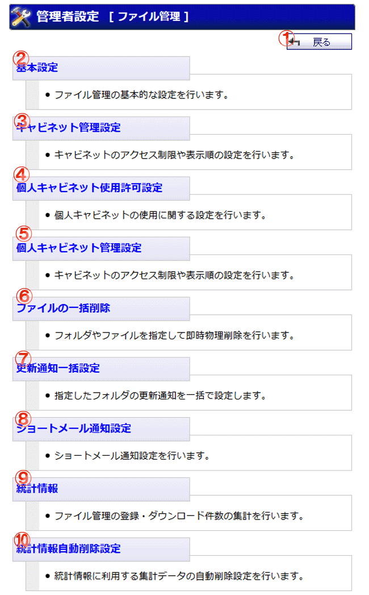

ファイル管理の管理者設定メニュー画面です。

機能説明
戻るボタン遷移元の画面へ遷移します。 |
基本設定ファイル管理の基本的な設定を行います。 |
キャビネット管理設定キャビネットのアクセス制限や表示順の設定を行います。 |
個人キャビネット使用許可設定全ユーザ、または指定ユーザに個人キャビネットの使用を許可するか設定できます。 |
個人キャビネット管理設定個人キャビネットの使用を許可されている場合に表示されます。 |
ファイルの一括削除フォルダやファイルを指定して即時物理削除を行います。 |
更新通知一括設定指定したフォルダの更新通知を一括で設定します。 |
ショートメール通知設定ショートメール通知設定画面へ遷移します。更新通知を設定したフォルダ内が更新された場合にショートメールで通知を行うか設定します。 |
統計情報ファイル管理の登録・ダウンロード件数の集計を行います。統計情報画面へ遷移します。 |
統計情報自動削除設定統計情報に利用する集計データの自動削除を行うための設定を行います。 |
統計情報手動削除任意の指定期間を経過した統計情報に利用する集計データの手動削除を行います。 |